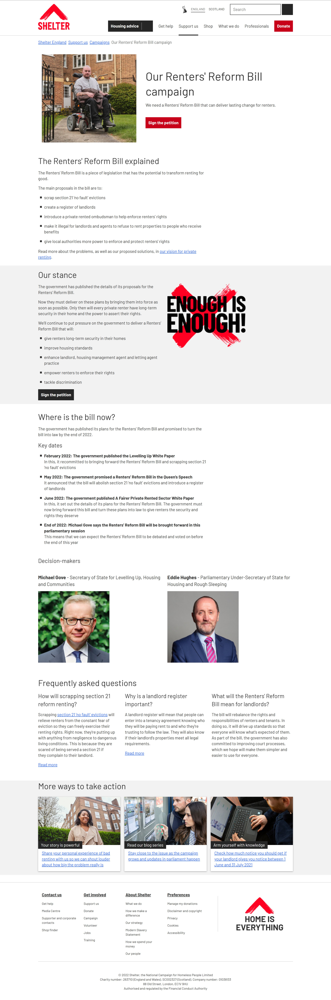
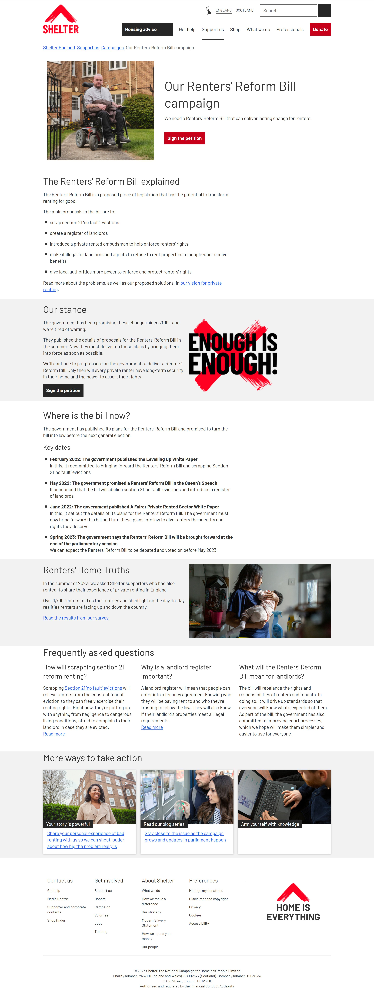

Turning a campaign page into a campaign home
Shelter's Renters Reform Bill campaign was delivering real change. The problem was that supporters didn't know about it.
Situation
Shelter's Renters Reform Bill campaign was one of the organisation's highest-priority pieces of work. The policies were in place and campaign activities were up and running, there was just nothing online tying it all together.
Traffic and petition engagement were underwhelming for a campaign of this scale. What engagement existed was being driven almost entirely by paid channels rather than organic interest. The page had content on it, but it wasn't structured around how people actually wanted to engage with it.
Task
The brief I defined was to turn a static campaign page into a campaign hub: a page that could explain the issue clearly, signal progress over time, surface Shelter's broader body of work on the topic, and give people multiple ways to act beyond signing the petition.
That meant the page needed to work for two audiences simultaneously. First-time visitors who needed context and a reason to care. And people who had already signed and wanted to know whether their signature had made any difference.
A petition page that doesn't show progress gives people no reason to come back. And people who don't come back don't share, don't write to their MP, and don't become long-term supporters.
Action
Discovery
We ran two rounds of research. The first was with existing campaign supporters, to understand what the engaged audience actually wanted from a campaign page. The second was unmoderated user testing with people unfamiliar with Shelter or the Renters Reform Bill, focused on three questions: what is this campaign about, what has happened so far, and what can I do?
The findings were consistent across both groups: people wanted to understand the bill, not just the problem, and they wanted to see evidence of progress. They wanted a clear sense of who was responsible. And more than one way to act.
The approach followed Shelter's own content design framework, which puts researching user needs before making any decisions about structure or format.
Structure
The research shaped a new page architecture built around the user journey rather than the organisation's internal logic. The before and after tell the story more clearly than any description.
How the page changed
Before


After


Progress as content
User testing kept surfacing the same thing: people who'd already signed wanted to know if it had made any difference. A live timeline of key parliamentary dates meant the page had a purpose beyond hosting the petition, and a reason for people to return.
Cross-linking as strategy
Shelter had a significant body of work on the Renters Reform Bill: policy reports, research surveys, blog series, MP voting tools. None of it was surfaced from the campaign page. Structuring the page as a hub meant people who arrived via the campaign could find Shelter's deeper work, and people who arrived via the research could find the campaign. The page stopped being a destination and started being a way in.
Result
Campaign page traffic increased by around 55% in the months following the relaunch. Petition engagement grew by roughly 40%. Heatmapping showed strong scroll depth and meaningful interaction across the hub sections.
The content strategy persisted after I left Shelter in late 2022. By early 2023 the team had added a "Renters' Home Truths" survey report to the page, slotting into the hub structure without any reworking needed.
The Renters' Rights Act passed in 2025, the result of six years of sustained campaigning.
Shelter is a registered UK charity campaigning for housing justice. Figures reflect recalled analytics from the period following the July 2022 relaunch.